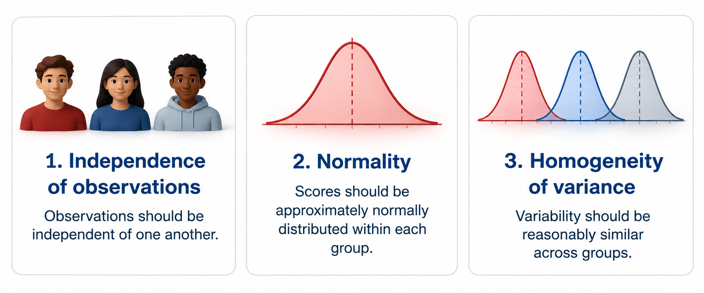
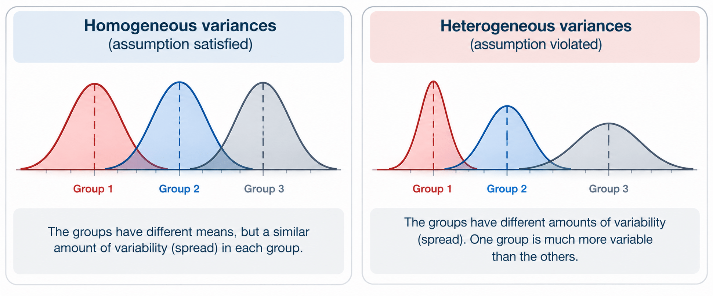
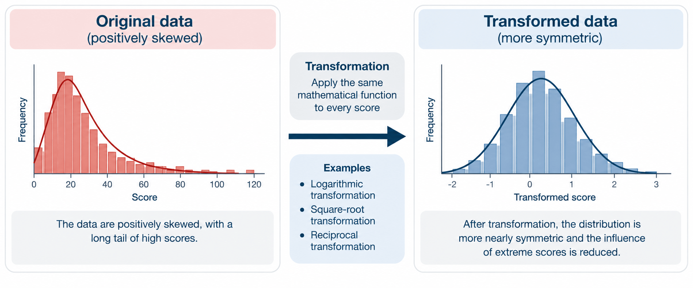
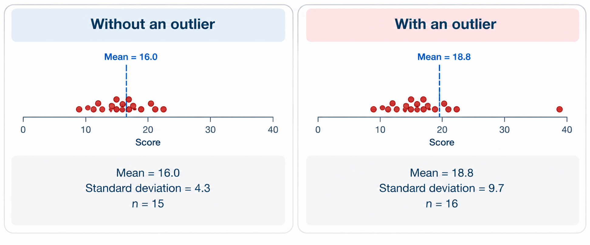
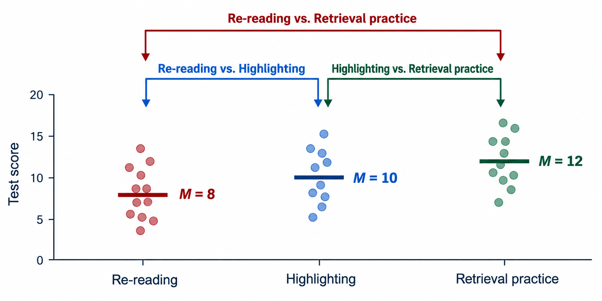
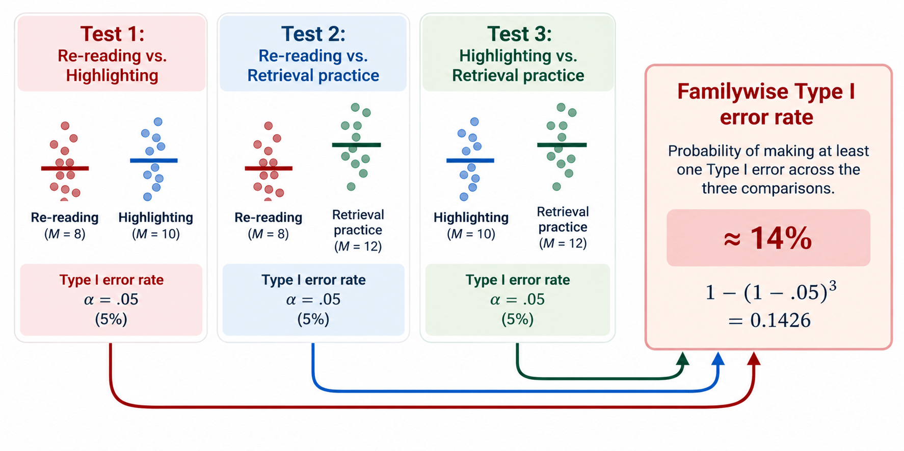
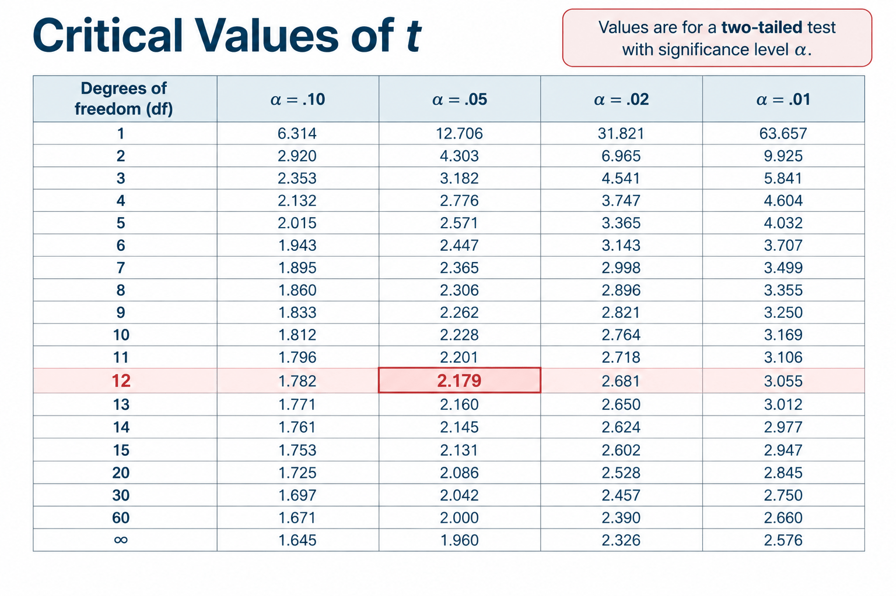
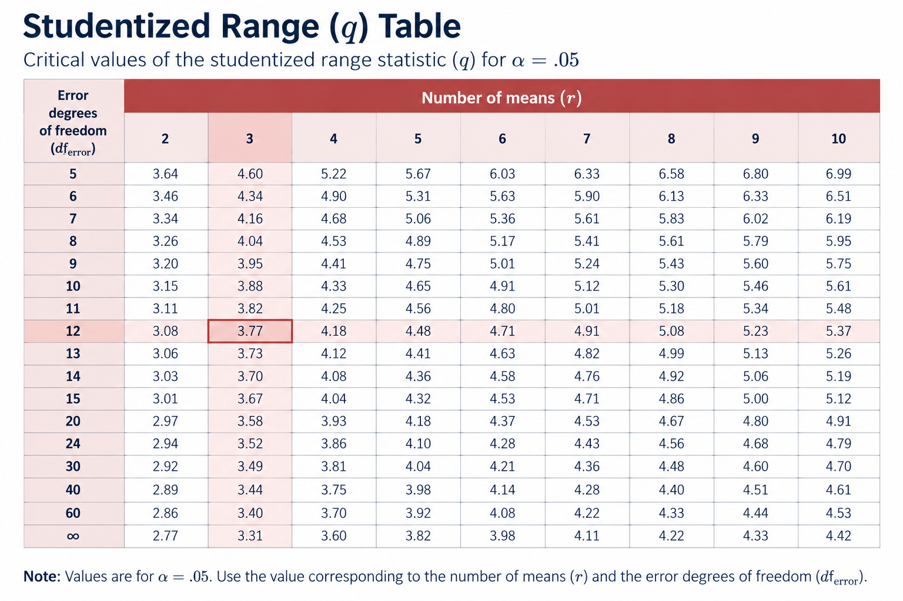

Before interpreting an ANOVA, we should consider whether its assumptions are reasonably satisfied


Homogeneity does not mean that the group means must be equal — it concerns the spread of scores within the groups.


In the practical: we will look at how to identify and deal with potential outliers in R
First, consider why the data are problematic
Check for data errors and extreme observations, and decide how they should be handled
In some circumstances, a data transformation may improve the properties of the data
Alternatively, we can use a non-parametric test, which makes fewer assumptions about the distribution of the data
For a single-factor between-participants design, one alternative is the Kruskal–Wallis test
Coming in Week 4: We will introduce non-parametric tests and learn when and how to use them
| Re-reading | Highlighting | Retrieval practice |
|---|---|---|
| 8 | 10 | 12 |
Where does the difference lie?


1. Planned comparisons
2. Post-hoc comparisons
| Source of variance | Sum of squares | Degrees of freedom | Variance (Mean square) | F |
|---|---|---|---|---|
| Between groups | 40 | 2 | 20 | 5.00 |
| Within groups | 48 | 12 | 4 | |
| Total | 88 | 14 |
In the previous lecture, we calculated the within-group variance as our estimate of experimental error. We can now use that same estimate of experimental error when testing our planned comparisons
The two means being compared
The number of observations contributing to those means
The within-group mean square from the ANOVA
The number of observations contributing to those means
and substitute:

We use the error degrees of freedom from our ANOVA
Retrieval practice produced significantly higher scores than re-reading
Retrieval practice did not produce significantly higher scores than highlighting
Retrieval practice vs. Re-reading: significant ✓
Retrieval practice vs. Highlighting: not significant ✗
A significant omnibus ANOVA does not mean that every pair of means differs significantly.
With a small number of genuinely planned comparisons, we can test each at the usual \(\alpha=.05\). With larger numbers, we may need to adjust our significance level
With five comparisons, each test must therefore reach \(p<.01\).
Post-hoc tests examine all possible pairwise comparisons
where \(W\) is the critical difference
Just like our planned comparisons, Tukey uses the estimate of experimental error from our ANOVA
From our ANOVA:
\[ r=3 \]\[ df_{\text{error}}=12 \]\[ MS_{\text{error}}=4 \]\[ n=5 \]

Error degrees of freedom from our ANOVA
Number of levels of factor
The relevant \(q\) value is approximately 3.77.
Then substitute:
\[ W = 3.77 \sqrt{\frac{4}{5}} \]\[ W = 3.77(0.894) \]\[ \boxed{W\approx3.37} \]
Two means must differ by more than approx. 3.37 points to be significantly different
Key takeaway: Only retrieval practice and re-reading differ significantly
| Comparison | Mean difference | Critical difference | Significant? |
|---|---|---|---|
| Retrieval practice – Re-reading | 12–8 = 4 | 3.37 | Yes ✓ |
| Retrieval practice – Highlighting | 12–10 = 2 | 3.37 | No ✗ |
| Highlighting – Re-reading | 10–8 = 2 | 3.37 | No ✗ |
Key takeaway: The choice between planned and post-hoc comparisons depends on the research questions and when the comparisons were specified
| Planned comparisons | Post-hoc comparisons |
|---|---|
| Specified before examining the data | Selected after examining the data |
| Test specific hypotheses | Explore which means differ |
| Usually involve selected comparisons | Can examine all pairwise comparisons |
| Can use t-tests with the ANOVA error term | Can use Tukey–Kramer HSD |
| Multiple-testing correction may be appropriate | Familywise error control is built into the procedure |